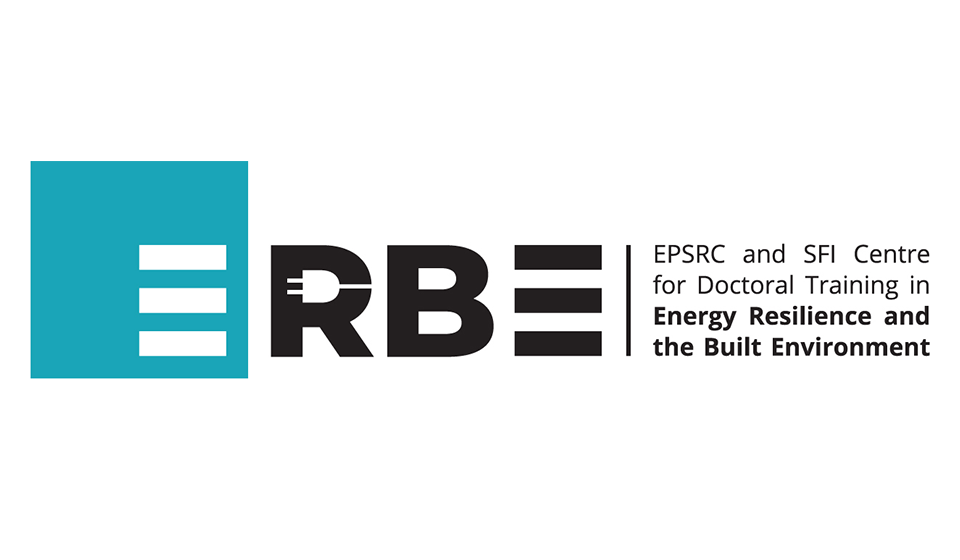
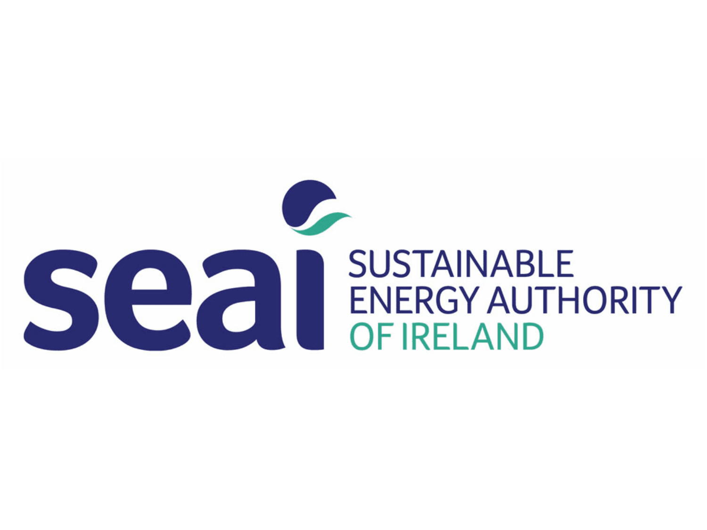
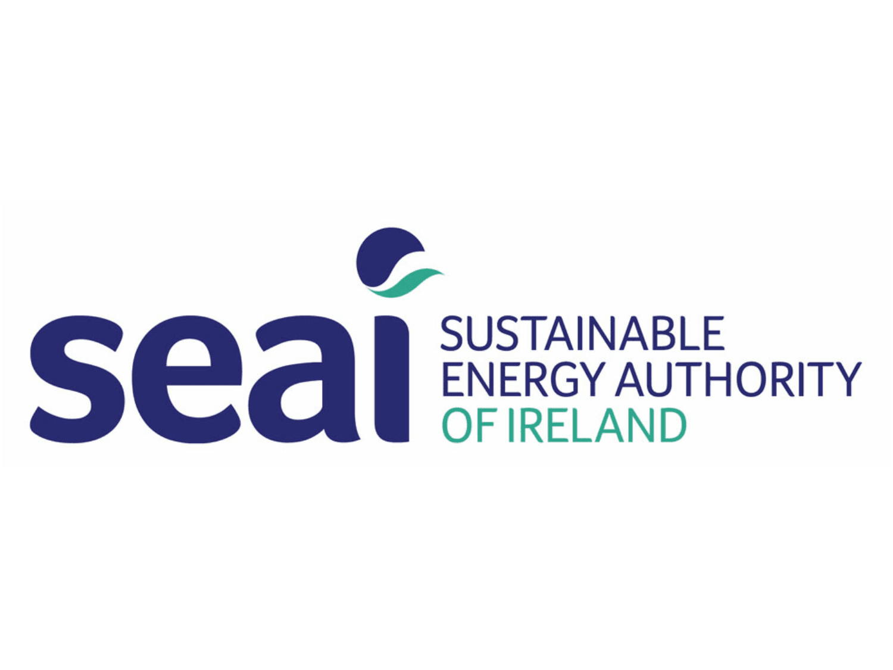
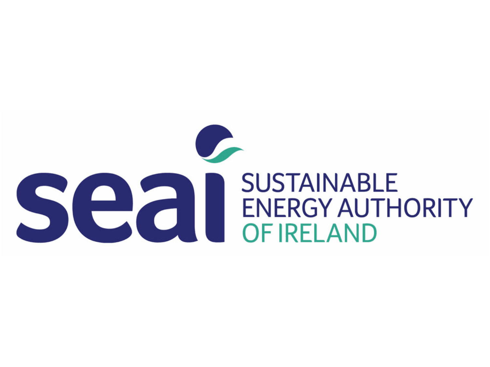

Latest News
- July 2025: New paper accepted in THERMINIC 2025 on Design and Implementation of an Autonomous Sensor-Controlled Loop for Data Centre Server Cooling Application.
- June 2025: PhD student Eoin Oude Essink presented at IEEE ITherm Conference.
- May 2025: Welcome to our new Post-Doc!
Our Partners

 

